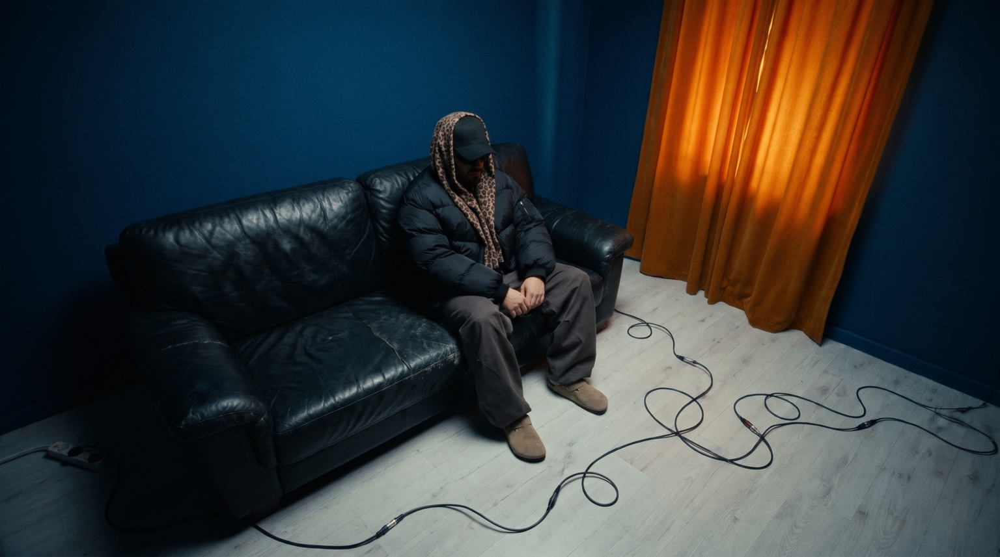

American–Persian recording artist
JOSEPH
LOS ANGELES × IRANEST. 2011
DISCOGRAPHY
SELECTED RELEASES / LISTEN BELOW
THE ARTIST / SINCE 2011TWO WORLDS.
TWO WORLDS.
ONE SOUND.
Joseph Nasrifar, professionally known as JOSEPH, is an American–Persian rapper, singer, and songwriter. Raised in Los Angeles with strong ties to Iran, he began writing, recording, and officially releasing music in 2011.
Blending melodic hip-hop, atmospheric trap, and English–Persian lyricism, his work explores ambition, relationships, nightlife, heartbreak, and personal transformation. His catalog includes collaborations with Ary Karami, Sami Low, and Mr. MP.
PRESS / BOOKING ↗VISUALS
ARTIST GALLERY



VIDEOS & LINKS
OFFICIAL CHANNELSCONNECT.
For professional inquiries
joenasrifar@gmail.com ↗